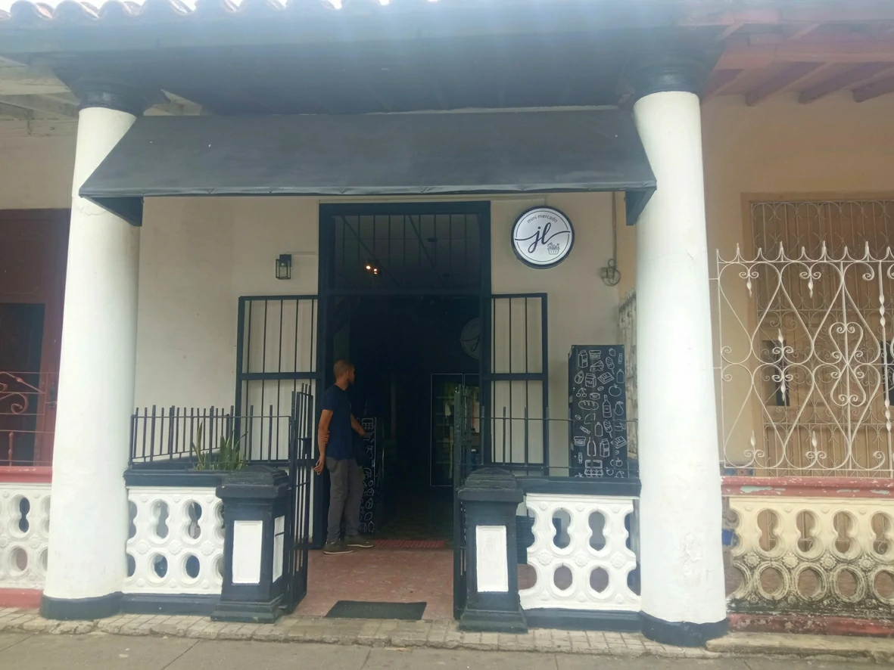
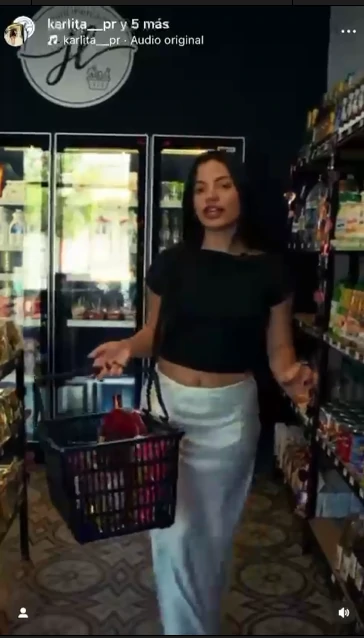
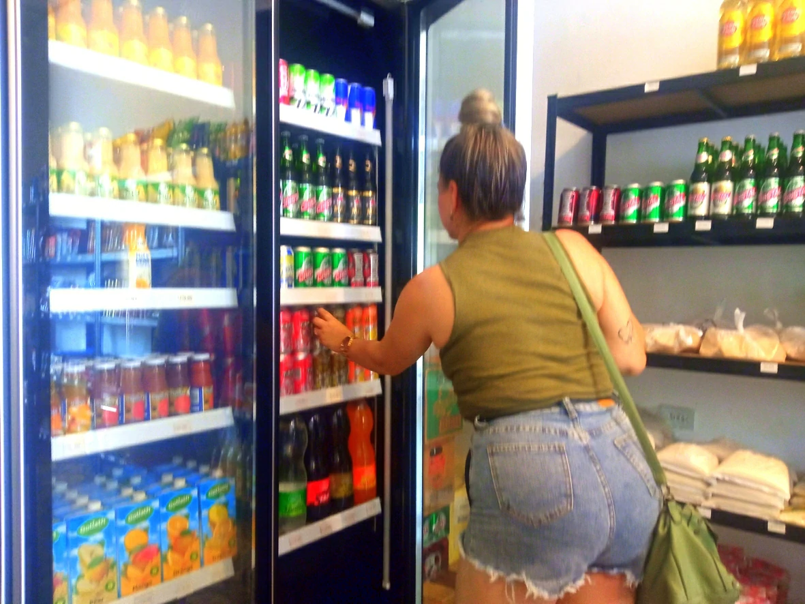
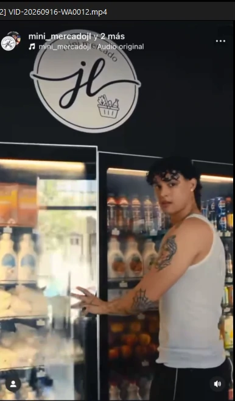

Más que una tienda,
una promesa de calidad
Conoce la esencia, los valores y el equipo humano detrás de cada producto que llega a tus manos desde JL Mini Mercado en Pinar del Río.
"El Precio se olvida, la Calidad se recuerda"
Nuestra Historia
JL Mini Mercado nació con una convicción simple pero poderosa: los pinareños merecen acceder a productos de calidad mundial sin salir de su ciudad. Desde nuestros primeros pasos en la Calle Martí No. 124, hemos evolucionado de un pequeño local a un referente comercial diversificado.
No solo vendemos productos; también curamos experiencias. Cada división, desde nuestra variedad de alimentos hasta el aseo personal y del hogar y la perfumería, han sido construida sobre la base de la confianza y el servicio personalizado.
Nuestra Esencia
Los pilares que sostienen cada decisión que tomamos.
Misión
Ser el aliado confiable del hogar y la familia pinareña, ofreciendo una selección premium de productos que combinan calidad, buen gusto y excelentes precios. Nos dedicamos a transformar la compra en un acto de satisfacción y tranquilidad.
Visión
Aspiramos a ser el Mercado más querido y confiable de Pinar del Río, reconocido no solo por lo que vendemos, sino por cómo hacemos sentir a nuestros clientes. Queremos expandir nuestra presencia manteniendo la calidez de un negocio familiar.
¿Qué Queremos Lograr?
Excelencia Absoluta
Garantizar que cada producto de nuestro catálogo supere las expectativas de calidad.
Fidelización Real
Crear vínculos duraderos donde el cliente se sienta parte de nuestra familia.
Innovación Constante
Traer las últimas tendencias en presencia y calidad de productos a nuestro mercado local antes que nadie.
Impacto Local
Contribuir al desarrollo económico y social de nuestra hermosa provincia.



Ven a conocernos
La mejor forma de entender nuestra pasión es visitándonos. Te esperamos con los brazos abiertos.
Visite nuestra tienda física